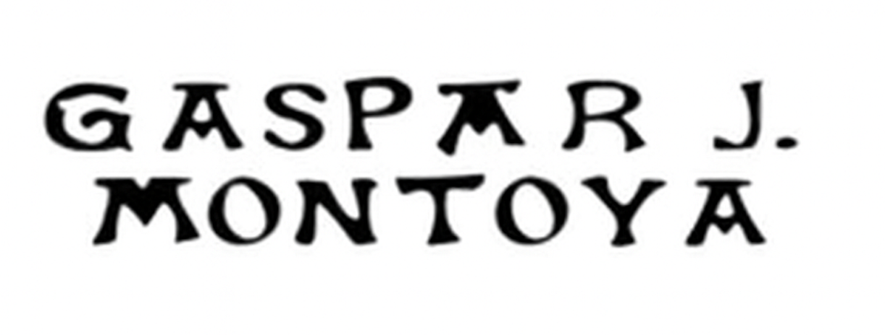
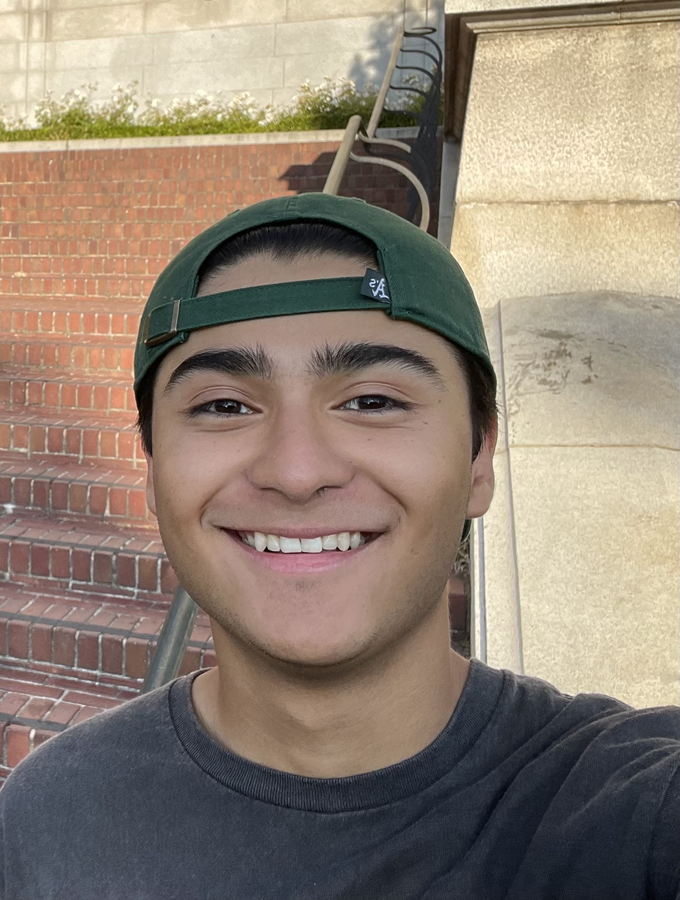

Home
Projects
Skills
Research
Books
Academic Highlights
Contact

Hello, I'm Gaspar J. Montoya
• Third year Computer Engineering Student
• Minoring in Data Science & AI
• Research Assistant
• Student Senator
• Class of Spring 2027
Download my CV